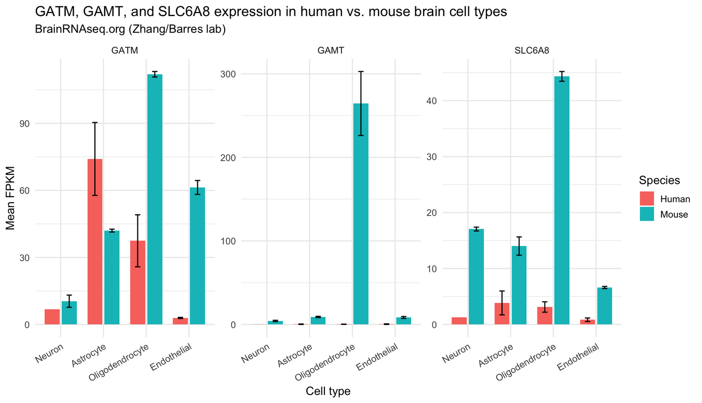
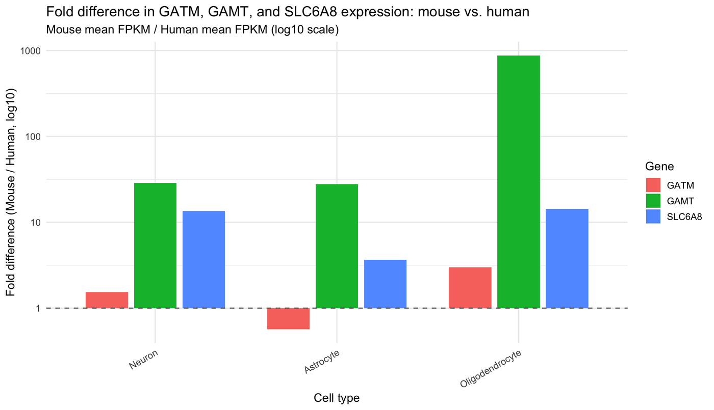

Final step of creatine synthesis
GAMT carriers are 1 in 430 to 1 in 720, and carrier frequency is undercounted outside Europe.
Guanidinoacetate N-methyltransferase (GAMT) turns guanidinoacetate into creatine. Without it the brain is short of creatine and guanidinoacetate builds up. GAMT deficiency was added to the US Recommended Uniform Screening Panel in 2023.
How variants are grouped on this page
Every number below counts variants in three groups, from most certain to least. Each step adds to the one before.
Confirmed pathogenic
Listed as pathogenic or likely pathogenic in ClinVar, or reported in patients with the disease.
Likely pathogenic
Variants that should stop the gene working (a premature stop, frameshift, splice-site or start-loss change) but have not been reported in patients.
In silico pathogenic
Missense or splice changes that computer tools (REVEL and SpliceAI) predict to be damaging, with no clinical classification yet.
Recurrent variants
A handful of variants account for most pathogenic alleles
The most common GAMT variants in All of Us
Share of all 808 confirmed and likely pathogenic alleles. Ten variants, each with 20 or more carriers, make up 69.7%.
c.327G>A is synonymous but alters splicing of exon 2. c.491G>A and c.224C>T have conflicting ClinVar classifications and are included because they have been reported in patients.
Ancestry
Known variants undercount carriers outside Europe
Carrier estimates for GAMT deficiency have come from about 10,000 people, mostly of European ancestry. In All of Us, confirmed pathogenic variants gave the highest carrier frequency in European-ancestry participants and lower frequencies in every other group.
Much of that gap is a classification gap. Variants that nobody has classified yet add 51% more qualifying alleles in European participants but 82% to 171% more in the other groups. Estimates built only on known pathogenic variants therefore understate the burden outside Europe.
GAMT carrier frequency by genetic ancestry
Newborn screening
Closer to what screening finds
Pilot newborn screening in Utah and New York found two cases among 811,310 babies. Confirmed pathogenic variants in All of Us would predict 0.39 cases, so the two observed are 5.1 times more than expected (p = 0.059). Adding in silico pathogenic variants raises the expectation to 1.10 cases, so the two observed are 1.8 times more than expected (p = 0.30).
Neither difference is statistically significant, but the pattern suggests that known variants alone miss part of the disease burden.
Variant map
Where GAMT variants fall
The variant map will be added when the manuscript is submitted.
In the lab
Modeling GAMT deficiency in human neurons
Population data tell us how often the disease should occur. The lab work asks what it does to a developing human neuron. This is, to our knowledge, the first human iPSC-derived neuron model of GAMT deficiency.
Maturation
GAMT-deficient neurons mature late
After NGN2 induction, iPSC-derived neurons extend neurites and branch as they mature. Neurons lacking GAMT are delayed. Drag the day to compare the two side by side.
Days after induction
Interactive schematicSchematic of a delay, not measured data. The size of the delay shown here is illustrative.
Species divergence
Mouse and human brains express creatine genes very differently
Most mechanistic work on creatine metabolism comes from mice. Public RNA-seq data from purified brain cell types show that GATM (AGAT, step 1), GAMT (step 2) and SLC6A8 (the creatine transporter) are expressed at very different levels in mouse and human, which limits how directly mouse findings transfer to human neurodevelopment.
Mean expression by brain cell type
Mouse GAMT expression is about 28-fold higher than human in neurons and about 870-fold higher in oligodendrocytes.
Source: BrainRNAseq.org (Zhang/Barres lab). Values were read from the source figures and rounded, so treat them as approximate. Fold difference is mouse mean FPKM divided by human mean FPKM.
Data table and original figures


Contact
Contact
abogonie@g.UCLA.edu